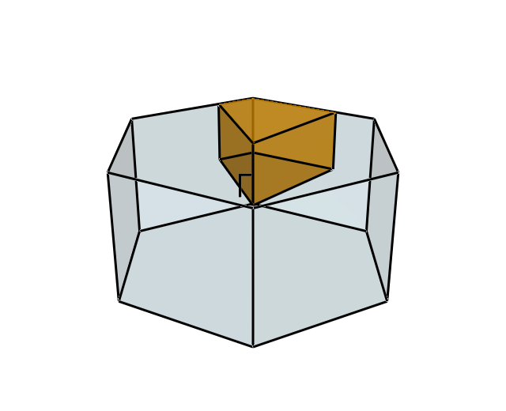
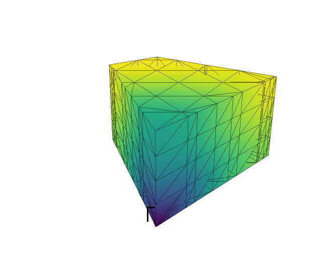
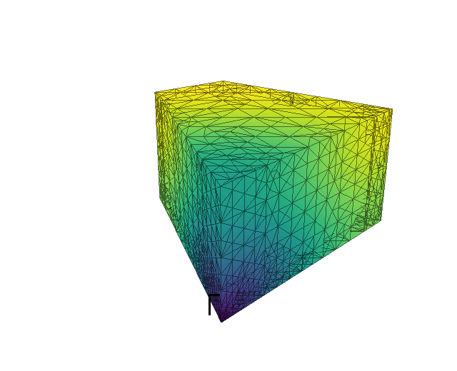

Building and refining a mesh
In this tutorial you will build a BZMeshQdd for a
hexagonal crystal, fill it with a model dispersion, measure how well it
interpolates the model, and then refine it where it interpolates badly.
Along the way you will draw the Brillouin zone and the mesh with
VisPy.
The code is one script, tutorial_03.py, which the tests run.
To run it yourself you need brille, NumPy and, for the figures,
VisPy with one of its backends (for example pip install vispy pyqt6).
python tutorial_03.py opens each figure in a window.
The lattice and its zones
Start with a hexagonal lattice, with point symmetry \(6/m\) (Hall symbol
-P 6), and find its Brillouin zone:
from brille import BrillouinZone, Lattice
lattice = Lattice(((3.0, 3.0, 5.0), (90, 90, 120)), spacegroup="-P 6")
bz = BrillouinZone(lattice)
print(f"first zone volume {bz.polyhedron.volume:.4f} Å⁻³")
print(f"irreducible volume {bz.ir_polyhedron.volume:.4f} Å⁻³")
first zone volume 6.3650 Å⁻³
irreducible volume 0.5304 Å⁻³
The first Brillouin zone is the hexagonal prism below. Its twelve symmetry operations (six rotations, each with and without inversion) map the orange irreducible zone onto the whole prism, so the irreducible zone is one twelfth of it. A grid only needs to cover the irreducible zone: brille uses the symmetry to interpolate anywhere else.


The first Brillouin zone (blue) and the irreducible zone (orange).
A model to interpolate
In practice the values on the grid come from an expensive calculation, such as phonon frequencies from a force-constant model. Here a simple function stands in: an acoustic-like branch that rises linearly from zero at the zone centre Γ. It is built from the symmetry-equivalents of the shortest direct-lattice vectors, so it has the lattice’s periodicity and symmetry, as a real dispersion does.
def acoustic_branch(lattice, scale=10.0):
"""An acoustic-like dispersion, in meV, with the lattice's periodicity and symmetry.
Sums 1 - cos(2 pi r.q) over the symmetry-equivalents r of the shortest direct
lattice vectors, so that the energy rises linearly from zero at Gamma.
"""
rotations = np.asarray(lattice.pointgroup.W)
star = {tuple(s * (w @ r)) for r in ((1, 0, 0), (0, 0, 1)) for w in rotations for s in (1, -1)}
star = np.array(sorted(star), dtype=float)
def energy(q):
q = np.atleast_2d(q)
return scale * np.sqrt(np.sum(1 - np.cos(2 * np.pi * q @ star.T), axis=1))
return energy
energy = acoustic_branch(lattice)
The grids store, at each vertex, values (scalars such as energies) and
vectors (such as eigenvectors). This model has no vectors, but the grid still
expects them, so grid_data gives one zero per point:
def grid_data(q):
"""The values and vectors to give a grid at the points q (rlu).
One value per point, the energy; this model has no eigenvectors, but the
grid still expects a vectors array, so give it a single zero per point.
"""
values = energy(q)[:, np.newaxis]
vectors = np.zeros((len(values), 1))
return values, vectors
ELEMENTS = (1,) # each point holds one scalar, in both values and vectors
Build and fill the mesh
BZMeshQdd holds real (d for double) values
and vectors; use BZMeshQdc for complex vectors, such as phonon
eigenvectors. max_size is the largest tetrahedron volume, in Å⁻³. The mesh
is a grid of the reciprocal lattice, divided finely enough that its tetrahedra
are no bigger than that, and clipped exactly to the irreducible zone.
from brille import BZMeshQdd
mesh = BZMeshQdd(bz, max_size=bz.ir_polyhedron.volume / 200)
values, vectors = grid_data(mesh.rlu)
mesh.fill(values, ELEMENTS, vectors, ELEMENTS)
print(f"initial mesh {len(mesh.rlu)} vertices, {len(mesh.tetrahedra)} tetrahedra")
initial mesh 197 vertices, 620 tetrahedra
The vertices are available in reciprocal lattice units as mesh.rlu and in
Å⁻¹ as mesh.invA; mesh.tetrahedra lists each tetrahedron’s four vertex
indices. Evaluate the model at mesh.rlu and pass the results to
fill(), in the same order.
The figure below shows the mesh’s surface, coloured by energy, from dark at Γ to yellow at the zone boundary.


The initial mesh: 197 vertices.
How good is the interpolation?
To judge the mesh, compare what it interpolates with the model itself. Two measures are useful: the error at the centre of each tetrahedron, which says where the mesh is too coarse, and the root-mean-square error at random points, which says how good it is overall.
def tetrahedron_errors(mesh):
"""How far the interpolated energy is from the model at each tetrahedron's centre"""
rlu = np.asarray(mesh.rlu)
centres = rlu[np.asarray(mesh.tetrahedra)].mean(axis=1)
interpolated = mesh.ir_interpolate_at(centres)[0][:, 0]
return np.abs(interpolated - energy(centres))
def rms_error(mesh, q):
"""The root-mean-square interpolation error at the points q"""
interpolated = mesh.ir_interpolate_at(q)[0][:, 0]
return np.sqrt(np.mean((interpolated - energy(q)) ** 2))
test_points = np.random.default_rng(1).uniform(-1, 1, (20000, 3))
errors = tetrahedron_errors(mesh)
print(f"largest centre error {errors.max():.3f} meV")
print(f"rms error {rms_error(mesh, test_points):.4f} meV")
largest centre error 0.965 meV
rms error 0.2307 meV
ir_interpolate_at() accepts points anywhere
in reciprocal space; it moves each into the irreducible zone, interpolates
there, and (for vectors) rotates the result back.
Refine where needed
The errors are largest near Γ, where the energy has a sharp cone that linear interpolation cannot follow. Refining the whole mesh would waste points where it is already good. Instead, mark the tetrahedra whose centre error is above a tolerance and refine only those:
tolerance = 0.05 # meV
resolution = 0.05 # inverse Angstrom
for step in range(10):
where = tetrahedron_errors(mesh) > tolerance
points = mesh.refinement_points(where, resolution=resolution)
if len(points) == 0:
break
mesh.refine(where, *grid_data(points), resolution=resolution)
print(f"step {step}: {where.sum():5d} tetrahedra marked, {len(points):5d} vertices added")
print(f"refined mesh {len(mesh.rlu)} vertices, {len(mesh.tetrahedra)} tetrahedra")
print(f"largest centre error {tetrahedron_errors(mesh).max():.3f} meV")
print(f"rms error {rms_error(mesh, test_points):.4f} meV")
Each step has three parts:
refinement_points()returns the vertices a refinement would add, without changing the mesh.Evaluate the model at those points.
refine()adds the vertices with the model’s values. Existing vertices keep their indices and their data.
To keep the mesh conforming, refinement may also split neighbouring tetrahedra that were not marked. It also splits equivalent edges on the zone boundary together, so that the mesh keeps matching itself across equivalent zone faces.
The cone at Γ never becomes linear, however small the tetrahedra are, so
without a limit this loop would continue until it ran out of memory. The
resolution argument stops it. No edge is split below
resolution / points_per_resolution (here 0.05 Å⁻¹ / 2), so there is no
detail finer than an instrument could resolve.
step 0: 527 tetrahedra marked, 295 vertices added
step 1: 1180 tetrahedra marked, 890 vertices added
step 2: 1797 tetrahedra marked, 1020 vertices added
step 3: 1463 tetrahedra marked, 874 vertices added
step 4: 639 tetrahedra marked, 410 vertices added
step 5: 284 tetrahedra marked, 91 vertices added
step 6: 197 tetrahedra marked, 12 vertices added
step 7: 194 tetrahedra marked, 3 vertices added
refined mesh 3792 vertices, 18042 tetrahedra
largest centre error 0.135 meV
rms error 0.0238 meV
The last steps still mark tetrahedra but add almost nothing: those tetrahedra touch Γ and are already at the resolution limit.


The refined mesh: 3,792 vertices, concentrated around Γ.
Compare with uniform refinement
Passing None (the default) as where refines every tetrahedron. Refining
the initial mesh uniformly until it has at least as many vertices gives a worse
result:
uniform = BZMeshQdd(bz, max_size=bz.ir_polyhedron.volume / 200)
values, vectors = grid_data(uniform.rlu)
uniform.fill(values, ELEMENTS, vectors, ELEMENTS)
while len(uniform.rlu) < len(mesh.rlu):
uniform.refine(None, *grid_data(uniform.refinement_points()))
print(f"uniformly refined {len(uniform.rlu)} vertices, rms error {rms_error(uniform, test_points):.4f} meV")
uniformly refined 6032 vertices, rms error 0.0316 meV
Refining only where the model needs it gives a smaller error with about 60% of the vertices. Every vertex means one more evaluation of the model, so fewer vertices means less time filling the mesh.
Save and reload
A mesh, its data and its refinement history can be saved to an HDF5 file. A reloaded mesh can be refined further:
with tempfile.TemporaryDirectory() as directory:
path = Path(directory) / "acoustic.h5"
mesh.to_file(str(path))
loaded = BZMeshQdd.from_file(str(path))
print(f"reloaded {len(loaded.rlu)} vertices, refinable: {loaded.refinable}")
reloaded 3792 vertices, refinable: True
Drawing with VisPy
The figures come from these helpers. zone_visuals uses
brille.vis to turn a zone polyhedron into VisPy visuals, and
surface_visuals draws the triangles on the mesh’s boundary, which are the
faces that belong to only one tetrahedron.
def zone_visuals(polyhedron, color, opacity):
"""VisPy visuals for a Brillouin zone polyhedron: translucent faces and an outline"""
from brille.vis import vis_polyhedron_boundary, vis_polyhedron_to_mesh
polyhedron = polyhedron.to_Cartesian()
faces = vis_polyhedron_to_mesh(polyhedron, color=color, opacity=opacity)
faces.set_gl_state("translucent", depth_test=False)
return [faces, *vis_polyhedron_boundary(polyhedron, color="black")]
def surface_visuals(vertices, tetrahedra, colors):
"""VisPy visuals for the surface of a tetrahedral mesh: the triangles on its
boundary, their vertices coloured, and their edges"""
from vispy.scene.visuals import Line, Mesh
corners = ((1, 2, 3), (0, 3, 2), (0, 1, 3), (0, 2, 1))
triangles = np.concatenate([tetrahedra[:, c] for c in corners])
# a triangle on the boundary belongs to one tetrahedron, one inside to two
_, first, count = np.unique(np.sort(triangles, axis=1), axis=0, return_index=True, return_counts=True)
surface = triangles[first[count == 1]]
faces = Mesh(vertices, surface, vertex_colors=colors)
# push the faces back a little, so that their edges are drawn over them
faces.set_gl_state(depth_test=True, polygon_offset_fill=True, polygon_offset=(1, 1))
edges = np.concatenate([surface[:, [0, 1]], surface[:, [1, 2]], surface[:, [2, 0]]])
lines = Line(vertices[edges].reshape(-1, 3), connect="segments", color=(0, 0, 0, 0.5), width=1)
return [faces, lines]
def gamma_label(size=32):
"""A label for the zone centre"""
from vispy.scene.visuals import Text
return [Text("Γ", pos=(0, 0, 0), color="black", font_size=size, anchor_x="right", anchor_y="top")]
def energy_colors(q):
"""Colours for the model energy at q, from dark (zero) to yellow (the maximum)"""
from vispy.color import get_colormap
e = energy(q)
return get_colormap("viridis").map(e / e.max())
def show(visuals, around, save=None, azimuth=-60, elevation=25, size=(640, 520)):
"""Draw visuals in a new VisPy canvas, looking at the points around; show it
interactively or write it to a PNG file"""
from vispy import app, io, scene
canvas = scene.SceneCanvas(keys="interactive", bgcolor="white", size=size, show=save is None)
view = canvas.central_widget.add_view()
low, high = np.min(around, axis=0), np.max(around, axis=0)
view.camera = scene.TurntableCamera(azimuth=azimuth, elevation=elevation, fov=30,
center=tuple((low + high) / 2), scale_factor=np.linalg.norm(high - low))
for visual in visuals:
view.add(visual)
if save is None:
app.run()
else:
io.write_png(str(save), canvas.render())
Each figure is then one call to show. For example, the refined mesh:
rlu, xyz = np.asarray(mesh.rlu), np.asarray(mesh.invA)
show(surface_visuals(xyz, np.asarray(mesh.tetrahedra), energy_colors(rlu)) + gamma_label(), xyz, save=target("refined"))
python tutorial_03.py --save DIRECTORY writes the figures as PNG files
instead of showing them. On a machine without a display, add
--backend egl to draw them with EGL, which needs an OpenGL driver such as
Mesa (on Debian or Ubuntu: apt install libegl1 libgl1-mesa-dri).
Next steps
Switch from BZTrellisQ to BZMeshQ compares
BZMeshQdcwithBZTrellisQdc, and shows how to switch.BZMeshQdcdocuments every method of the mesh.